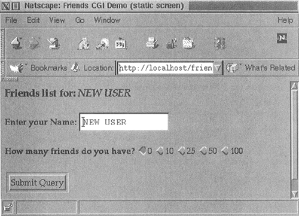
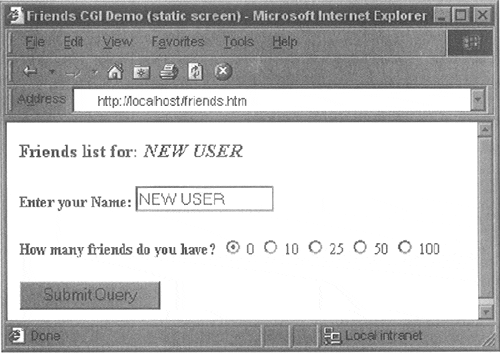
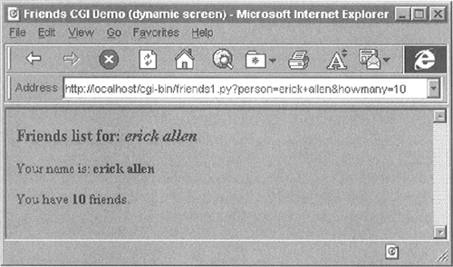
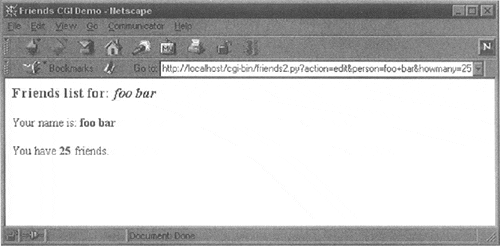
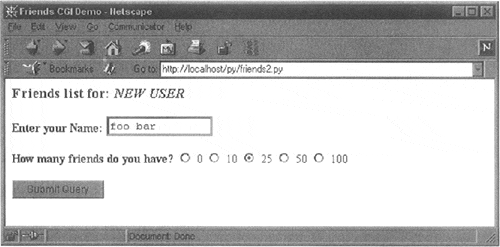
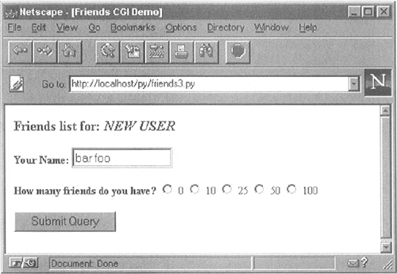
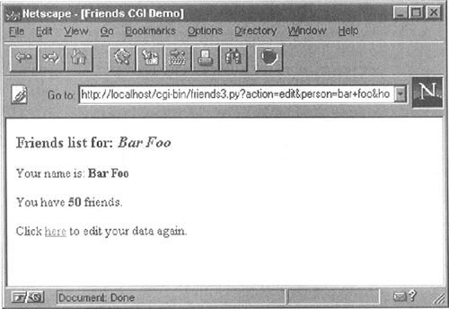
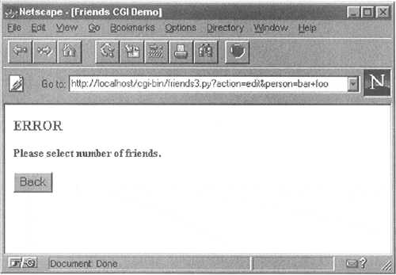
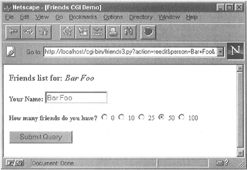

| < BACK | Make Note | Bookmark | CONTINUE > |
Building CGI Application
Generating the Results Page
In Example 19.2, we present the code for a simple Web form, friends.htm.
Example 19.2. Static Form Web Page (friends.htm)
This HTML file presents a form to the user with an empty field for the user's name and a set of radio buttons for the user to choose from.
<$nopage> 001 1 <HTML><HEAD><TITLE> 002 2 Friends CGI Demo (static screen) 003 3 </TITLE></HEAD> 004 4 <BODY><H3>Friends list for: <I>NEW USER</I></H3> 005 5 <FORM ACTION="/cgi-bin/friends1.py"> 006 6 <B>Enter your Name:</B> 007 7 <INPUT TYPE=text NAME=person SIZE=15> 008 8 <P><B>How many friends do you have?</B> 009 9 <INPUT TYPE=radio NAME=howmany VALUE="0"> CHECKED> 0 010 10 <INPUT TYPE=radio NAME=howmany VALUE="10"> 10 011 11 <INPUT TYPE=radio NAME=howmany VALUE="25"> 25 012 12 <INPUT TYPE=radio NAME=howmany VALUE="50"> 50 013 13 <INPUT TYPE=radio NAME=howmany VALUE="100"> 100 014 14 <P><INPUT TYPE=submit></FORM></BODY></HTML> 015 <$nopage>
As you can see in the code, the form contains two input variables: person and howmany. The values of these two fields will be passed to our CGI script, friends1.py.
You will notice in our example that we install our CGI script into the default cgi-bin directory (see the "Action" link) on the local host. (If this information does not correspond with your development environment, update the form action before attempting to test the Web page and CGI script.) Also, because a METHOD subtag is missing from the form action, all requests will be of the default type, GET. We choose the GET method because we do not have very many form fields, and also, we want our query string to show up in the "Location" (a.k.a. "Address," "Go To") bar so that you can see what URL is sent to the server.
Let's take a look at the screen which is rendered by friends.htm in a Web browser. Figure19-4 illustrates what the page would look like using Netscape Communicator 4 in a UNIX environment, while Figure19-5 is an example of using Microsoft IE5 on Windows.
Figure 19-4. Friends Form Page in Netscape4 on Unix (friends.htm)
The input is entered by the user and the "Submit" button is pressed. (Alternatively, the user can also press the RETURN or Enter key within the text field to cause a similar effect.) When this occurs, the script in Example 19.3, friends1.py, is executed via CGI.
Figure 19-5. Friends Form Page in IE5 on Windows (friends.htm)
Example 19.3. Results Screen CGI code (friends1.py)
This CGI script grabs the person and howmany fields from the form and uses that data to create the dynamically-generated results screen.
<$nopage> 001 1 #!/usr/bin/env python 002 2 003 3 import cgi 004 4 005 5 reshtml = '''Content-Type: text/html\n 006 6 <HTML><HEAD><TITLE> 007 7 Friends CGI Demo (dynamic screen) 008 8 </TITLE></HEAD> 009 9 <BODY><H3>Friends list for: <I>%s</I></H3> 010 10 Your name is: <B>%s</B><P> 011 11 You have <B>%s</B> friends. 012 12 </BODY></HTML>''' 013 13 014 14 form = cgi.FieldStorage() 015 15 who = form['person'].value 016 16 howmany = form['howmany'].value 017 17 print reshtml % (who, who, howmany) 018 <$nopage>
This script contains all the programming power to read the form input and process it, as well as return the resulting HTML page back to the user. All the "real" work in this script takes place in only four lines of Python code (lines 14–17).
The form variable is our FieldStorage instance, containing the values of the person and howmany fields. We read these into the Python whoand howmany variables, respectively. The reshtml variable contains the general body of HTML text to return, with a few fields filled in dynamically, the data just read in from the form.
NOTE
One thing which always nails CGI beginners is that when sending results back to a CGI script, it must return the appropriate HTTP headers first before any HTML. Furthermore, to distinguish between these headers and the resulting HTML, several newline characters must be inserted between both sets of data, as in line 5 of our friends1.py example as well as for the code in the remaining part of the chapter.
One possible resulting screen appears in Figure19-6, assuming the user typed in "erick allen" as the name and clicked on the "10 friends" radio button.
Figure 19-6. Friends Results Page in IE3 on Windows
The screen snapshot this time is represented by the older IE3 browser in a Windows environment.
If you are a Web site producer, you may be thinking, "Gee, wouldn't it be nice if I could automatically capitalize this person's name, especially if they forgot?" This can easily be accomplished using Python CGI. (And we shall do so soon!)
Notice how on a GET request that our form variables and their values are added to the form action URL in the "Address" bar. Also, did you observe that the title for the friends.htm page has the word "static" in it while the output screen from friends.py has the work "dynamic" in its title? We did that for a reason: to indicate that friends.htm file is a static text file while the results page is dynamically-generated. In other words, the HTML for the results page did not exist on disk as a text file; rather, it was generated by our CGI script and returned it as if it was a local file.
In our next example, we will bypass static files altogether by updating our CGI script to be somewhat more multifaceted.
Generating Form and Results Pages
We obsolete friends.html and merge it into friends2.py. The script will now generate both the form page as well as the results page. But how can we tell which page to generate? Well, if there is form data being sent to us, that means that we should be creating a results page. If we do not get any information at all, that tells us that we should generate a form page for the user to enter his or her data.
Our new friends2.py script is shown in Example 19.4.
Example 19.4. Generating Form and Results Pages (friends2.py)
Both friends.html and friends1.py are merged together as friends2.py. The resulting script can now output both form and results pages as dynamically-generated HTML and has the smarts to know which page to output.
<$nopage>
001 1 #!/usr/bin/env python
002 2
003 3 import cgi
004 4
005 5 header = 'Content-Type: text/html\n\n'
006 6
007 7 formhtml = '''<HTML> <HEAD><TITLE>
008 8 Friends CGI Demo</TITLE></HEAD>
009 9 <BODY><H3>Friends list for: <I>NEW USER</I>></H3>
010 10 <FORM ACTION="/cgi-bin/friends2.py">
011 11 <B>Enter your Name:</B>
012 12 <INPUT TYPE=hidden NAME=action VALUE=edit>
013 13 <INPUT TYPE=text NAME=person SIZE=15>
014 14 <P><B>How many friends do you have?</B>
015 15 %s
016 16 <P><INPUT TYPE=submit></FORM></BODY></HTML>'''
017 17
018 18 fradio = '<INPUT TYPE=radio NAME=howmany VALUE="%s" %s> %s\n'
019 19
020 20 def showForm():
021 21 friends = ''
022 22 for i in [0, 10, 25, 50, 100]:
023 23 checked = ''
024 24 if i == 0:
025 25 checked = 'CHECKED'
026 26 friends = friends + fradio % \
027 27 (str(i), checked, str(i))
028 28
029 29 print header + formhtml % (friends)
030 30
031 31 reshtml = '''<HTML><HEAD><TITLE>
032 32 Friends CGI Demo</TITLE></HEAD>
033 33 <BODY><H3>Friends list for: <I>%s</I></H3>
034 34 Your name is: <B>%s</B><P>
035 35 You have <B>%s</B> friends.
036 36 </BODY></HTML>'''
037 37
038 38 def doResults(who, howmany):
039 39 print header + reshtml % (who, who, howmany)
040 40
041 41 def process():
042 42 form = cgi.FieldStorage()
043 43 if form.has_key('person'):
044 44 who = form['person'].value
045 45 else: <$nopage>
046 46 who = 'NEW USER'
047 47
048 48 if form.has_key('howmany'):
049 49 howmany = form['howmany'].value
050 50 else: <$nopage>
051 51 howmany = 0
052 52
053 53 if form.has_key('action'):
054 54 doResults(who, howmany)
055 55 else: <$nopage>
056 56 showForm()
057 57
058 58 if __name__ == '__main__':
059 59 process()
060 <$nopage>
So what did we change in our script? Let's take a look at some of the blocks of code in this script.
Line-by-line explanation
Lines 1 – 5
In addition to the usual start-up and module import lines, we separate the HTTP MIME header from the rest of the HTML body because we will use it for both types of pages (form page and results page) returned and don't want to duplicate the text. We will add this header string to the corresponding HTML body when it comes time for output to occur.
Lines 7 – 29
All of this code is related to the now-integrated friends.htm form page in our CGI script. We have a variable for the form page text, formhtml, and we also have a string to build the list of radio buttons, fradio. We could have duplicated this radio button HTML text as it is in friends.htm, but we wanted to show how we could use Python to generate more dynamic output—see the for-loop on lines 22–27.
The showForm() function has the responsibility of generating a form for user input. It builds a set of text for the radio buttons, merges those lines of HTML into the main body of formhtml, prepends the header to the form, and then returns the entire wad of data back to the client by sending the entire string to standard output.
There are a couple of interesting things to note about this code. The first is the "hidden" variable in the form called action, containing the value, "edit" on line 12. This field is the only way we can tell which screen to display (i.e., the form page or the results page). We will see this field come into play in lines 53–56.
Also, observe that we set the 0 radio button as the default by "checking" it within the loop that generates all the buttons. This will also allow us to update the layout of the radio buttons and/or their values on a single line of code (line 18) rather than over multiple lines of text. It will also offer some more flexibility in letting the logic determine which radio button is checked—see the next update to our script, friends3.py coming up.
Now you may be thinking, "Why do we need an action variable when I could just as well be checking for the presence of person or howmany?" That is a valid question because yes, you could have just used person or howmany in this situation.
However, the action variable is a more conspicuous presence, in as far as its name as well as what it does—the code is easier to understand. The person and howmany variables are used for their values while the action variable is used as a flag.
The other reason for creating action is that we will be using it again to help us determine which page to generate. In particular, we will need to display a form with the resence of a person variable (rather than a results page)—this will break your code if you are solely relying on there being a person variable.
Lines 31 – 39
The code to display the results page is practically identical to that of friends1.py.
Lines 41 – 56
Since there are different pages which can result from this one script, we created an overall process() function to get the form data and decide which action to take. The main portion of process() will also look familiar to the main body of code in friends1.py. There are two major differences, however.
Since the script may or may not be getting the expected fields (invoking the script the first time to generate a form page, for example, will not pass any fields to the server), we need to "bracket" our retrieval of the form fields with if statements to check if they are even there. Also, we mentioned the action field above which helps us decide which page to bring up. The code that performs this determination is in lines 53–56.
In Figure19-8 and Figure19-7, you will see first the form screen generated by our script (with a name entered and radio button chosen), followed by the results page, also generated by our script.
Figure 19-8. Friends Form Page in Netscape4 on Windows
Figure 19-7. Friends Results Page in Netscape4 on Windows
If you look at the location or "Go to" bar, you will not see a URL referring to a static friends.htm file as you did in Figure19-4 or Figure19-5 earlier.
Fully Interactive Web Sites
Our final example will complete the circle. As in the past, a user enters his or her information from the form page. We then process the data and output a results page. Now we will add a link to the results page that will allow the user to go back to the form page, but rather than presenting a blank form, we will fill in the data that the user has already provided. We will also add some error processing to give you an example of how it can be accomplished.
We now present our final update, friends3.py in Example 19.5.
Example 19.5. Full User Interaction and Error Processing (friends3.py)
By adding a link to return to the form page with information already provided, we have come "full circle," giving the user a fully-interactive Web surfing experience. Our application also now performs simple error checking which notifies the user if no radio button was selected.
<$nopage>
001 1 #!/usr/bin/env python
002 2
003 3 import cgi
004 4 from urllib import quote_plus
005 5 from string import capwords
006 6
007 7 header = 'Content-Type: text/html\n\n'
008 8 url = '/cgi-bin/friends3.py'
009 9
010 10 errhtml = '''<HTML><HEAD><TITLE>
011 11 Friends CGI Demo</TITLE></HEAD>
012 12 <BODY><H3>ERROR</H3>
013 13 <B>%s</B><P>
014 14 <FORM><INPUT TYPE=button VALUE=Back
015 15 ONCLICK="window.history.back()"></FORM <$nopage>
016 16 </BODY></HTML>'''
017 17
018 18 def showError(error_str):
019 19 print header + errhtml % (error_str)
020 20
021 21 formhtml = '''<HTML><HEAD><TITLE>
022 22 Friends CGI Demo</TITLE></HEAD>
023 23 <BODY><H3>Friends list for: <I>%s</I></H3>
024 24 <FORM ACTION="%s">
025 25 <B>Your Name:</B>
026 26 <INPUT TYPE=hidden NAME=action VALUE=edit>
027 27 <INPUT TYPE=text NAME=person VALUE="%s" SIZE=15>
028 28 <P><B>How many friends do you have?</B>
029 29 %s
030 30 <P><INPUT TYPE=submit></FORM></BODY></HTML>'''
031 31
032 32 fradio = '<INPUT TYPE=radio NAME=howmany VALUE="%s" %s> %s\n'
033 33
034 34 def showForm(who, howmany):
035 35 friends = ''
036 36 for i in [0, 10, 25, 50, 100]:
037 37 checked = ''
038 38 if str(i) == howmany:
039 39 checked = 'CHECKED'
040 40 friends = friends + fradio % \
041 41 (str(i), checked, str(i))
042 42 print header + formhtml % (who, url, who, friends)
043 43
044 44 reshtml = '''<HTML><HEAD><TITLE>
045 45 Friends CGI Demo</TITLE></HEAD>
046 46 <BODY><H3>Friends list for: <I>%s</I></H3>
047 47 Your name is: <B>%s</B><P>
048 48 You have <B>%s</B> friends.
049 49 <P>Click <A HREF="%s">here</A> to edit your data again.
050 50 </BODY></HTML>'''
051 51
052 52 def doResults(who, howmany):
053 53 newurl = url + '?action=reedit&person=%s&howmany=%s'%\
054 54 (quote_plus(who), howmany)
055 55 print header + reshtml % (who, who, howmany, newurl)
056 56
057 57 def process():
058 58 error = ''
059 59 form = cgi.FieldStorage()
060 60
061 61 if form.has_key('person'):
062 62 who = capwords(form['person'].value)
063 63 else: <$nopage>
064 64 who = 'NEW USER'
065 65
066 66 if form.has_key('howmany'):
067 67 howmany = form['howmany'].value
068 68 else: <$nopage>
069 69 if form.has_key('action') and \
070 70 form['action'].value == 'edit':
071 71 error = 'Please select number of friends.'
072 72 else: <$nopage>
073 73 howmany = 0
074 74
075 75 if not error:
076 76 if form.has_key('action') and \
077 77 form['action'].value != 'reedit':
078 78 doResults(who, howmany)
079 79 else: <$nopage>
080 80 showForm(who, howmany)
081 81 else: <$nopage>
082 82 showError(error)
083 83
084 84 if __name__ == '__main__':
085 85 process()
086 <$nopage>
friends3.py is not too unlike friends2.py. We invite the reader to compare the differences; we present a brief summary of the major changes for you here:
Abridged line-by-line explanation
Line 8
We take the URL out of the form because we now need it in two places, the results page being the new customer.
Lines 10 – 19, 69 – 71, 75 – 82
All of these lines deal with the new feature of having an error screen. If the user does not select a radio button indicating the number of friends, the howmany field is not passed to the server. In such a case, the showError() function returns the error page to the user.
The error page also features a JavaScript "Back" button. Because buttons are input types, we need a form, but no action is needed because we are simply just going back one page in the browsing history. Although our script currently supports (a.k.a. detects, tests for) only one type of error, we still use a generic error variable in case we wanted to continue development of this script to add more error detection in the future.
Lines 27, 38–41, 49, and 52–55
One goal for this script is to create a meaningful link back to the form page from the results page. This is implemented as a link to give the user the ability to return to a form page to update the data her or she entered, in case it was erroneous. The new form page makes sense only if it contains information pertaining to the data that has already been entered by the user. (It is frustrating for users to reenter their information from scratch!)
To accomplish this, we need to embed the current values into the updated form. In line 27, we add a value for the name. This value will be inserted into the name field, if given. Obviously, it will be blank on the initial form page. In Line 38–41, we set the radio box which corresponds to the number of friends currently chosen. Finally, on lines 49 and the updated doResults() function on lines 52–55, we create the link with all the existing information which "returns" the user to our modified form page.
Line 62
Finally, we added a simple feature that we thought would add a nice aesthetic touch. In the screens for friends1.py and friends2.py, the text entered by the user as his or her name is taken verbatim. You will notice in the screens above that if the user does not capitalize his or her names, that is reflected in the results page. We added a call to the string.capwords() function to automatically capitalize a user's name. The capwords() function will capitalize the first letter of each word in the string that is passed in. This may or may not be a desired feature, but we thought that we would share it with you so that you know that such functionality exists.
We will now present four screens which shows the progression of user interaction with this CGI form and script.
In the first screen, shown in Figure19-9, we invoke friends3.py to bring up the now-familiar form page. We enter a name "bar foo," but deliberately avoid checking any of the radio buttons. The resulting error after submitting the form can be seen in the second screen (Figure19-10).
Figure 19-9. Friends Initial Form Page in Netscape3 on Windows
We click on the "Back" button, check the "50" radio button, and resubmit our form. The results page, seen in Figure 19-11, is also familiar, but now has an extra link at the bottom. This link will take us back to the form page.
Figure 19-11. Friends Results Page (Valid Input)
The only difference between the new form page and our original is that all the data filled in by the user is now set as the "default" settings, meaning that the values are already available in the form. We can see this in Figure19-12.
Figure 19-10. Friends Error Page (invalid user input)
Figure 19-12. Friends Updated Form Page with Current Information
Now the user is able to make changes to either of the fields and resubmit their form.
You will no doubt begin to notice that as our forms and data get more complicated, so does the generated HTML, especially for complex results pages. If you ever get to a point where generating the HTML text is interfering with your application, you may consider connecting with a Python module such as HTMLgen, an external Python module which specializes in HTML generation.
| Last updated on 9/14/2001 Core Python Programming, © 2002 Prentice Hall PTR |
| < BACK | Make Note | Bookmark | CONTINUE > |